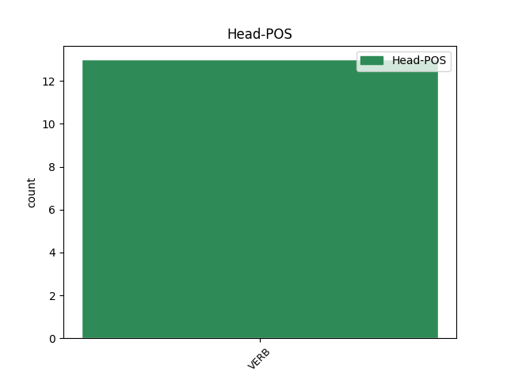
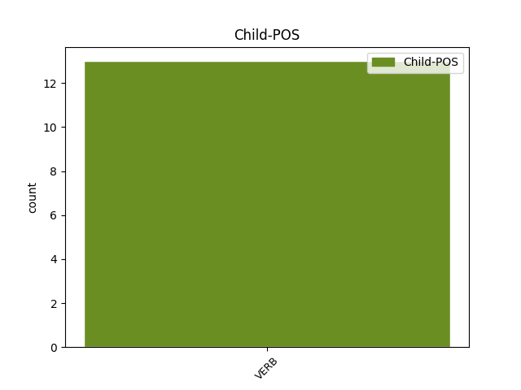

Distribution of features within this leaf



Agreement Rules sorted by frequency.
- When the dependent token is the parataxis(parataxis) of the head token, and the head token is AUX and the dependent token is VERB.
1 Absoliučiai _ _ _ _ 0 _ _ _
2 nepriklausoma _ _ _ _ 0 _ _ _
3 šių _ _ _ _ 0 _ _ _
4 dienų _ _ _ _ 0 _ _ _
5 pasaulyje _ _ _ _ 0 _ _ _
6 yra būti AUX VBC Mood=Ind|Number=Sing|Person=3|Polarity=Pos|Reflex=No|Tense=Pres|VerbForm=Fin|Voice=Act 0 _ _ _
7 nebent _ _ _ _ 0 _ _ _
8 Šiaurės _ _ _ _ 0 _ _ _
9 Korėja _ _ _ _ 0 _ _ _
10 ; _ _ _ _ 0 _ _ _
11 visos _ _ _ _ 0 _ _ _
12 kitos _ _ _ _ 0 _ _ _
13 šalys _ _ _ _ 0 _ _ _
14 , _ _ _ _ 0 _ _ _
15 įskaitant _ _ _ _ 0 _ _ _
16 JAV _ _ _ _ 0 _ _ _
17 ir _ _ _ _ 0 _ _ _
18 Rusiją _ _ _ _ 0 _ _ _
19 , _ _ _ _ 0 _ _ _
20 daugiau _ _ _ _ 0 _ _ _
21 ar _ _ _ _ 0 _ _ _
22 mažiau _ _ _ _ 0 _ _ _
23 riboja riboti VERB VBC Mood=Ind|Number=Plur|Person=3|Polarity=Pos|Reflex=No|Tense=Pres|VerbForm=Fin|Voice=Act 6 parataxis _ En=limit
24 savo _ _ _ _ 0 _ _ _
25 veikimo _ _ _ _ 0 _ _ _
26 laisvę _ _ _ _ 0 _ _ _
27 , _ _ _ _ 0 _ _ _
28 atsižvelgdamos _ _ _ _ 0 _ _ _
29 į _ _ _ _ 0 _ _ _
30 kitų _ _ _ _ 0 _ _ _
31 interesus _ _ _ _ 0 _ _ _
32 ( _ _ _ _ 0 _ _ _
33 būna _ _ _ _ 0 _ _ _
34 , _ _ _ _ 0 _ _ _
35 kad _ _ _ _ 0 _ _ _
36 ir _ _ _ _ 0 _ _ _
37 neatsižvelgia _ _ _ _ 0 _ _ _
38 , _ _ _ _ 0 _ _ _
39 bet _ _ _ _ 0 _ _ _
40 tada _ _ _ _ 0 _ _ _
41 yra _ _ _ _ 0 _ _ _
42 teisingai _ _ _ _ 0 _ _ _
43 baramos _ _ _ _ 0 _ _ _
44 ) _ _ _ _ 0 _ _ _
45 . _ _ _ _ 0 _ _ _
Disagree Examples:
1 Emocijos _ _ _ _ 0 _ _ _
2 ir _ _ _ _ 0 _ _ _
3 ekstatiški _ _ _ _ 0 _ _ _
4 ritualai _ _ _ _ 0 _ _ _
5 yra būti AUX VBC Mood=Ind|Number=Plur|Person=3|Polarity=Pos|Reflex=No|Tense=Pres|VerbForm=Fin|Voice=Act 0 _ _ _
6 gana _ _ _ _ 0 _ _ _
7 pavojingas _ _ _ _ 0 _ _ _
8 daiktas _ _ _ _ 0 _ _ _
9 – _ _ _ _ 0 _ _ _
10 tuos _ _ _ _ 0 _ _ _
11 metodus _ _ _ _ 0 _ _ _
12 naudojo naudoti VERB VBC Mood=Ind|Number=Plur|Person=3|Polarity=Pos|Reflex=No|Tense=Past|VerbForm=Fin|Voice=Act 5 parataxis _ En=use
13 ir _ _ _ _ 0 _ _ _
14 nacizmas _ _ _ _ 0 _ _ _
15 , _ _ _ _ 0 _ _ _
16 ir _ _ _ _ 0 _ _ _
17 stalinizmas _ _ _ _ 0 _ _ _
18 . _ _ _ _ 0 _ _ _
1 Į _ _ _ _ 0 _ _ _
2 tai _ _ _ _ 0 _ _ _
3 man _ _ _ _ 0 _ _ _
4 bus būti AUX VBC Mood=Ind|Number=Sing|Person=3|Polarity=Pos|Reflex=No|Tense=Fut|VerbForm=Fin|Voice=Act 0 _ _ _
5 atsakyta atsakyti VERB VBNL Case=Nom|Definite=Ind|Gender=Fem|Number=Sing|Polarity=Pos|Reflex=No|Tense=Past|VerbForm=Part|Voice=Pass 4 comp:aux@pass _ En=answer|SpaceAfter=No
6 : _ _ _ _ 0 _ _ _
7 „ _ _ _ _ 0 _ _ _
8 čia _ _ _ _ 0 _ _ _
9 ne _ _ _ _ 0 _ _ _
10 mes _ _ _ _ 0 _ _ _
11 vieni _ _ _ _ 0 _ _ _
12 kalti _ _ _ _ 0 _ _ _
13 “ _ _ _ _ 0 _ _ _
14 . _ _ _ _ 0 _ _ _